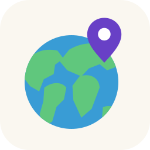
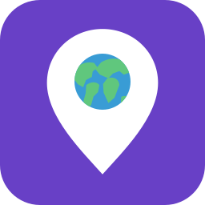
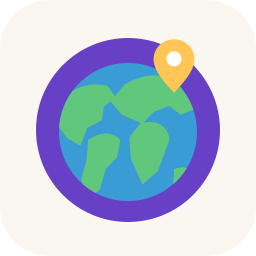
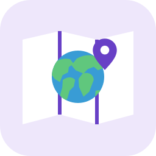
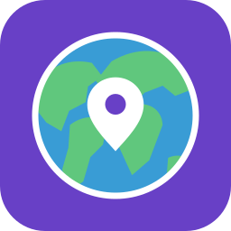

Geo · mundo e descoberta
Oito opções originais e minimalistas inspiradas na ideia de globo e localização.

01 · Globo com marcador
Prévia pequena

02 · Mundo dentro do marcador
Prévia pequena
03 · Rota ao redor do mundo
Prévia pequena
04 · Marcador sobre o horizonte
Prévia pequena

05 · Selo do mundo
Prévia pequena

06 · Mapa com marcador
Prévia pequena

07 · Marcador no centro do mundo
Prévia pequena
08 · G de Geo com planeta
Prévia pequena